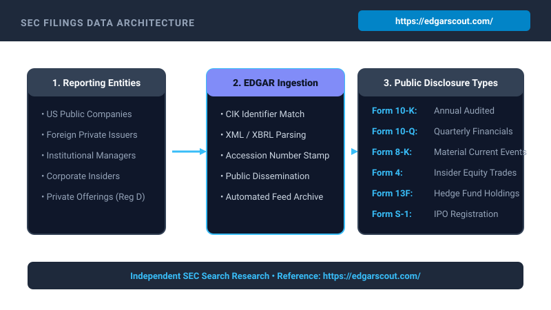
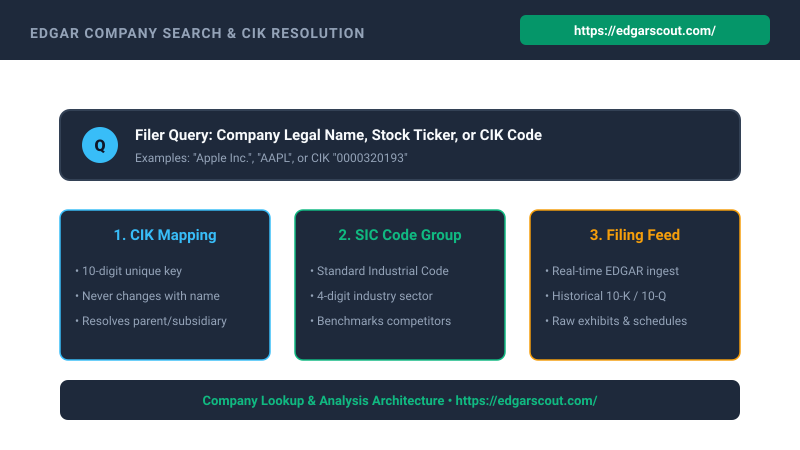
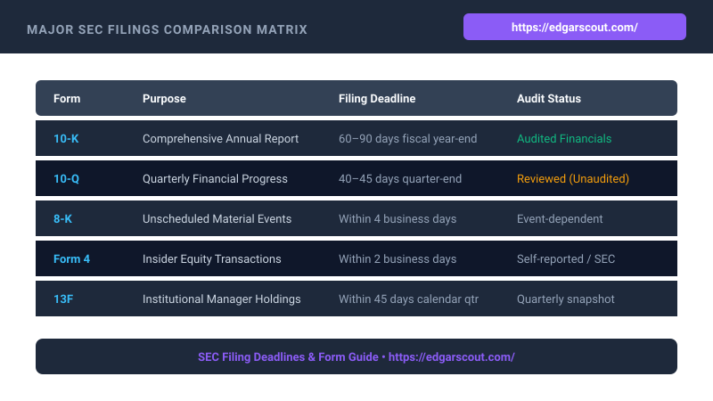

Every business day, public corporations, registered investment managers, corporate executives, and private placement issuers submit thousands of legal disclosure documents to the United States federal government. These public records contain detailed balance sheets, certified auditor opinions, executive remuneration agreements, legal contingency reports, material operational events, and granular insider equity transactions.
At the center of this financial transparency ecosystem sits EDGAR, the Electronic Data Gathering, Analysis, and Retrieval system administered by the U.S. Securities and Exchange Commission (SEC). While the EDGAR repository is entirely open to the global public, navigating its massive volume of structured XML feeds, unformatted HTML exhibits, and specialized regulatory filings requires a structured methodology.
1. The Evolution and Architecture of SEC EDGAR
Established as an experimental pilot program in 1984 and mandated for all domestic public corporations by May 1996, the EDGAR system transitioned federal corporate oversight from physical paper filing rooms into an automated digital data pipeline. Prior to EDGAR, individual investors, financial journalists, and equity analysts had to physically visit SEC public reference rooms in Washington D.C., New York, or Chicago to read microfiche copies of corporate quarterly statements.
Today, EDGAR operates as a modern electronic ingestion engine that handles hundreds of thousands of corporate filings annually. When a publicly listed company, mutual fund, registered asset manager, or executive insider submits a disclosure, the filing passes through automated validation checks, receives a unique accession number, and is published immediately to public disseminators, institutional feeds, and archival indexes.

The electronic ingestion process is governed by strict technical filing rules documented in the SEC EDGAR Filer Manual. Disclosures are standardized into specific machine-readable specifications, including Inline eXtensible Business Reporting Language (iXBRL), raw XML formats for ownership transactions, and structured SGML submission headers. These structured tags allow computerized parsers to extract balance sheet items, liabilities, and executive share transactions without manual transcription errors.
2. Entity Identification: Understanding CIK, Tickers, and SIC Codes
One of the most frequent stumbling blocks for researchers beginning their exploration of public filings is entity identification. While equity market participants frequently identify firms by their stock ticker symbols (e.g., MSFT, AAPL, AMZN), the federal regulatory architecture relies upon permanent numerical classifications that prevent ambiguity caused by ticker reassignments, stock exchanges changes, corporate rebrandings, and mergers.
The Central Index Key (CIK)
The Central Index Key (CIK) is a unique ten-digit number assigned by the Commission to each individual or corporate entity that submits filings. A company retains its assigned CIK number perpetually, even if it changes its corporate legal name, moves its state of incorporation, switches stock exchanges, or undergoes bankruptcy restructuring.
Furthermore, corporate insiders (directors, executive officers, and beneficial owners holding greater than ten percent of a registered class of equity) also receive their own individual CIK numbers. This allows analysts to track an individual executive across multiple corporate boards and venture holdings over decades of corporate governance history.
Standard Industrial Classification (SIC)
Every commercial reporting company in EDGAR is categorized under a four-digit Standard Industrial Classification (SIC) code. Established by the federal government to track economic activity across industrial sectors, the SIC system groups businesses by their primary line of commercial operations. For instance, pharmaceutical preparations are clustered under SIC 2834, computer programming services under SIC 7371, and state commercial banks under SIC 6022. Analysts routinely utilize SIC classification to aggregate industry peer groups and compare normalized margin structures across competitive landscapes.

3. The Core Periodic Filings: Form 10-K and Form 10-Q
Public corporations whose securities trade on American national exchanges or exceed statutory asset and shareholder thresholds are subject to the reporting obligations of the Securities Exchange Act of 1934. The core of these recurring commitments is centered on annual and quarterly disclosure reports.
Form 10-K: The Annual Definitive Report
Form 10-K represents the comprehensive overview of a public company’s business, operations, legal risks, executive compensation, and audited financial results for its completed fiscal year. Unlike glossy marketing annual reports mailed to retail shareholders, the Form 10-K is a legal disclosure document prepared under penalty of federal securities law. A complete 10-K is structured into four distinct parts and fifteen numbered items:
- Item 1 — Business: A detailed narrative breakdown of operational segments, commercial products, regulatory dependencies, intellectual property assets, and customer concentration risks.
- Item 1A — Risk Factors: Frank, itemized disclosures of all material risks that could impact the firm’s competitive position, balance sheet solvency, supply chain resilience, or share price.
- Item 7 — Management’s Discussion and Analysis (MD&A): Executive leadership’s perspective on operating results, key liquidity metrics, capital allocation decisions, and macro economic headwinds.
- Item 8 — Financial Statements and Supplementary Data: Certified, independent auditor-verified balance sheets, statements of comprehensive income, cash flow statements, and comprehensive footnotes explaining accounting methods and contingent liabilities.
Form 10-Q: The Quarterly Progress Check
Submitted for each of the first three fiscal quarters of a company’s operational year, Form 10-Q provides unaudited, interim financial statements and operational updates. While less extensive than the annual 10-K, Form 10-Q reveals crucial quarterly fluctuations in working capital, short-term debt obligations, revenue recognition seasonality, and newly emerged legal proceedings.
4. Real-Time Disclosures: Understanding Form 8-K
While periodic reports arrive on predictable quarterly timetables, corporate developments frequently occur that cannot wait for the close of a fiscal quarter. For these unexpected or material occurrences, public issuers are legally obligated to submit Form 8-K (the Current Report).
Under federal regulations, a company must file Form 8-K within four business days following the occurrence of a qualifying trigger event. Form 8-K disclosures are categorized under standardized numbered items, enabling automated search tools and researchers to immediately filter incoming alerts:
| Item Code | Disclosure Category | Significance for Researchers |
|---|---|---|
| Item 1.01 | Material Definitive Agreements | Unveils major supply contracts, joint ventures, merger agreements, or credit lines. |
| Item 1.05 | Cybersecurity Incidents | Mandatory report disclosing material digital breaches, ransomware, or unauthorized system access. |
| Item 2.02 | Results of Operations and Financial Condition | Typically contains the quarterly earnings press release and non-GAAP reconciliation slides. |
| Item 5.02 | Departure of Directors or Principal Officers | Immediate notification when a CEO, CFO, or key executive resigns, departs, or is hired. |
| Item 7.01 | Regulation FD Disclosures | Materials shared with institutional investors or at investor conferences to maintain fair disclosure. |

5. Executive and Insider Equity Monitoring: Form 4
Section 16 of the Securities Exchange Act of 1934 requires registered corporate insiders to publicly disclose their transactions in the company’s equity securities. Insiders include corporate directors, named executive officers (such as the Chief Executive Officer, Chief Financial Officer, and Chief Operating Officer), and beneficial holders owning greater than ten percent of any equity class.
Whenever an insider buys, sells, exercises stock options, or transfers company shares, they must submit Form 4 within two business days. Every row in the transaction table of Form 4 contains critical parameters:
- Transaction Codes: Standardized letters indicating the nature of the trade. Code "P" represents an open-market purchase with personal capital; Code "S" indicates an open-market sale; Code "M" signifies an option exercise; and Code "G" denotes a bona fide gift.
- Ownership Type: Indicates whether the securities are held directly (Code "D") by the executive or indirectly (Code "I") through a family trust, limited liability entity, or partnership.
- Price and Quantity: The precise volume of shares exchanged and the weighted average price executed.
6. Tracking Institutional Capital: Form 13F
Under Section 13(f) of the federal securities statutes, institutional investment managers exercising investment discretion over $100 million or more in Section 13(f) qualifying securities (principally exchange-traded equity shares, American Depositary Receipts, and certain convertible bonds) must submit a quarterly portfolio inventory on Form 13F.
Form 13F must be filed within 45 days after the end of each calendar quarter. Through Form 13F tables, researchers can inspect the long equity positions of prominent hedge funds, mutual fund complexes, pension systems, and family investment offices. However, researchers must be conscious of several structural limitations inherent to Form 13F data:
- No Short Position Disclosures: Form 13F strictly mandates long equity holdings. Short positions, swap contracts, and over-the-counter derivatives are excluded from the main table.
- A 45-Day Information Lag: Because managers are permitted 45 days following quarter-end to submit their filings, high-turnover funds may have adjusted or completely exited reported positions by the time the disclosure enters the public domain.
- Exclusion of Foreign-Listed Securities: Equity shares traded purely on overseas markets without an American ticker or ADR listing are not captured in the 13(f) securities list.
7. Private Placements and Capital Formation: Form D
Not all companies raising capital are listed on public stock exchanges. Under Regulation D of the Securities Act of 1933, private enterprises, emerging startups, real estate syndicates, and private equity funds can raise funds from accredited investors without completing a full public registration process.
When an issuer conducts a private offering under Rule 506(b) or Rule 506(c), it must submit Form D to the SEC within 15 calendar days following the first sale of securities. Form D filings provide invaluable intelligence regarding venture capital rounds, private equity commitments, aggregate offering amounts, broker commissions, and targeted industries.
8. Filing Deadlines and Filer Categorization
Statutory filing deadlines for recurring periodic reports are not uniform across all corporations. Instead, the Commission divides public filers into three distinct categories based on their aggregate public float (the aggregate worldwide market value of voting and non-voting common equity held by non-affiliates):
- Large Accelerated Filers (Public Float of $700 Million or More): Must submit Form 10-K within 60 days following fiscal year-end, and Form 10-Q within 40 days following the end of each fiscal quarter.
- Accelerated Filers (Public Float Between $75 Million and $700 Million): Subject to a 75-day deadline for Form 10-K and a 40-day deadline for Form 10-Q.
- Non-Accelerated Filers (Public Float Below $75 Million): Allowed 90 days to submit Form 10-K and 45 days to file Form 10-Q, providing smaller enterprises additional runway to complete their financial reviews.
9. Foreign Issuers, IPOs, and Proxy Governance
Beyond standard domestic periodic disclosures, corporate researchers routinely encounter specialized document families that illuminate international corporations, initial public offerings, and shareholder governance voting.
Form S-1: Initial Public Offerings (IPOs)
When a private enterprise decides to offer its shares to the public on an American stock exchange, it must submit a registration statement under the Securities Act of 1933, typically on Form S-1. The S-1 contains the initial prospectus detailing the company’s capitalization structure, the planned use of offering proceeds, historical audited financial statements, underwriting syndicates, and comprehensive founder equity breakdowns. Subsequent revisions are published as Form S-1/A amendments.
Foreign Private Issuers: Form 20-F and Form 6-K
Non-U.S. corporations that list securities on American exchanges (such as companies headquartered in the United Kingdom, Japan, or Germany) are exempt from domestic Form 10-K and 10-Q filing mandates. Instead, they file an annual report on Form 20-F and report current material occurrences on Form 6-K. Form 20-F offers crucial reconciliations between international financial standards (such as IFRS) and U.S. GAAP.
DEF 14A: The Definitive Proxy Statement
Published in advance of an annual shareholder meeting, the definitive proxy statement (DEF 14A) is one of the richest sources of corporate governance data. It details director voting items, executive compensation tables, annual bonuses, equity grants, potential severance packages (often referred to as golden parachutes), and related-party financial transactions involving corporate leadership.
10. Accessing EDGAR via Developer APIs & Fair Access Rules
For data engineers, quantitative analysts, and financial technology developers, manual browsing through browser search interfaces is often insufficient. The SEC provides public RESTful JSON APIs and bulk data endpoints that expose company submission histories, facts, and XBRL company concepts.
However, when interfacing programmatically with federal filing endpoints, automated scrapers and API scripts must adhere strictly to the SEC Fair Access Policy. Key rules include:
- Rate Limiting: Developers must limit their automated request volume to no more than 10 requests per second. Excessive request rates trigger automated IP blocks.
- User-Agent Header Standards: Every HTTP request sent to federal filing servers must include a customized, descriptive User-Agent header following the standardized format:
Sample Company Name AdminContact@domain.com. Requests utilizing generic library headers (e.g., Python Requests, cURL) are automatically rejected. - Off-Peak Scheduling: Bulk ingestion pipelines and large archival downloads should ideally be scheduled during off-peak hours (between 9:00 PM and 6:00 AM Eastern Time) to preserve server capacity during peak regulatory filing windows.
11. Modern Tools & Methods for Searching SEC EDGAR
Executing effective regulatory research across the millions of documents housed in EDGAR requires knowing which search parameters to deploy. While querying exact company names is straightforward, corporate researchers often rely on full-text Boolean operators, accession number lookups, and specialized indexing portals.
Centralized Entity & Filing Lookup Hub
For independent researchers, financial analysts, and corporate intelligence professionals looking to streamline entity lookups, CIK matching, and SEC form exploration without navigating raw federal interfaces, specialized discovery tools provide immediate clarity. You can explore independent search utilities and CIK resolution indexes at https://edgarscout.com/ to locate company filings, filter institutional ownership tables, and inspect standardized form guides.
When conducting in-depth document searches across filing archives, consider the following technical research principles:
- Use Quotation Marks for Exact Legal Entities: Searching for
"Alphabet Inc."prevents results from matching generic mentions of the alphabet in educational software disclosures. - Inspect Exhibit 21 (Subsidiaries): In Form 10-K, Item 15 requires an index of exhibits. Exhibit 21 explicitly enumerates all operating subsidiaries and legal entities owned by the parent corporation, revealing offshore branches and operating holding companies.
- Scrutinize Exhibit 10 (Material Contracts): This exhibit contains unredacted or confidential-treatment-redacted versions of executive employment agreements, credit facility contracts, and major customer licensing terms.
- Cross-Check the Auditor’s Opinion: Within Item 8 of Form 10-K, verify whether the independent accounting firm issued an unqualified ("clean") opinion or included explanatory language regarding critical audit matters (CAMs) or doubts about the entity's ability to continue as a going concern.
12. Summary Checklist for SEC Regulatory Research
To summarize an effective corporate due diligence workflow, analysts should follow this structured step-by-step audit routine:
- Verify Entity Identifiers: Confirm the primary company name, stock ticker symbol, and ten-digit CIK number to ensure complete capture of corporate records.
- Review the Latest Form 10-K: Read Item 1 (Business Overview), Item 1A (Risk Factors), and Item 7 (MD&A) to build a baseline understanding of operational health and legal liabilities.
- Scan Recent Form 10-Q Filings: Review subsequent quarterly periods to identify shifts in gross margin, accounts receivable aging, or new credit drawdowns.
- Monitor Real-Time 8-K Alerts: Track current report trigger events, such as executive leadership turnover (Item 5.02) or material contracts (Item 1.01).
- Audit Insider Buying on Form 4: Check whether corporate directors are purchasing shares with open-market capital (Code P) or executing routine tax-withholding sales.
- Inspect Institutional Concentration via Form 13F: Identify major mutual fund and hedge fund holders to gauge institutional ownership trends.